Estimating Non-Linear Models with brms
Paul Bürkner
2026-08-24
Source:vignettes/brms_nonlinear.Rmd
brms_nonlinear.RmdIntroduction
This vignette provides an introduction on how to fit non-linear multilevel models with brms. Non-linear models are incredibly flexible and powerful, but require much more care with respect to model specification and priors than typical generalized linear models. Ignoring group-level effects for the moment, the predictor term \(\eta_n\) of a generalized linear model for observation \(n\) can be written as follows:
\[\eta_n = \sum_{i = 1}^K b_i x_{ni}\]
where \(b_i\) is the regression coefficient of predictor \(i\) and \(x_{ni}\) is the data of predictor \(i\) for observation \(n\). This also comprises interaction terms and various other data transformations. However, the structure of \(\eta_n\) is always linear in the sense that the regression coefficients \(b_i\) are multiplied by some predictor values and then summed up. This implies that the hypothetical predictor term
\[\eta_n = b_1 \exp(b_2 x_n)\]
would not be a linear predictor anymore and we
could not fit it using classical techniques of generalized linear
models. We thus need a more general model class, which we will call
non-linear models. Note that the term ‘non-linear’ does not say
anything about the assumed distribution of the response variable. In
particular it does not mean ‘not normally distributed’ as we can apply
non-linear predictor terms to all kinds of response distributions (for
more details on response distributions available in
brms see vignette("brms_families")).
A Simple Non-Linear Model
We begin with a simple example using simulated data.
b <- c(2, 0.75)
x <- rnorm(100)
y <- rnorm(100, mean = b[1] * exp(b[2] * x))
dat1 <- data.frame(x, y)As stated above, we cannot use a generalized linear model to estimate \(b\) so we go ahead an specify a non-linear model.
prior1 <- prior(normal(1, 2), nlpar = "b1") +
prior(normal(0, 2), nlpar = "b2")
fit1 <- brm(bf(y ~ b1 * exp(b2 * x), b1 + b2 ~ 1, nl = TRUE),
data = dat1, prior = prior1)When looking at the above code, the first thing that becomes obvious
is that we changed the formula syntax to display the
non-linear formula including predictors (i.e., x) and
parameters (i.e., b1 and b2) wrapped in a call
to bf. This stands in contrast to classical
R formulas, where only predictors are given and
parameters are implicit. The argument b1 + b2 ~ 1 serves
two purposes. First, it provides information, which variables in
formula are parameters, and second, it specifies the linear
predictor terms for each parameter. In fact, we should think of
non-linear parameters as placeholders for linear predictor terms rather
than as parameters themselves (see also the following examples). In the
present case, we have no further variables to predict b1
and b2 and thus we just fit intercepts that represent our
estimates of \(b_1\) and \(b_2\) in the model equation above. The
formula b1 + b2 ~ 1 is a short form of
b1 ~ 1, b2 ~ 1 that can be used if multiple non-linear
parameters share the same formula. Setting nl = TRUE tells
brms that the formula should be treated as
non-linear.
In contrast to generalized linear models, priors on population-level
parameters (i.e., ‘fixed effects’) are often mandatory to identify a
non-linear model. Thus, brms requires the user to
explicitly specify these priors. In the present example, we used a
normal(1, 2) prior on (the population-level intercept of)
b1, while we used a normal(0, 2) prior on (the
population-level intercept of) b2. Setting priors is a
non-trivial task in all kinds of models, especially in non-linear
models, so you should always invest some time to think of appropriate
priors. Quite often, you may be forced to change your priors after
fitting a non-linear model for the first time, when you observe
different MCMC chains converging to different posterior regions. This is
a clear sign of an identification problem and one solution is to set
stronger (i.e., more narrow) priors.
To obtain summaries of the fitted model, we apply
summary(fit1) Family: gaussian
Links: mu = identity
Formula: y ~ b1 * exp(b2 * x)
b1 ~ 1
b2 ~ 1
Data: dat1 (Number of observations: 100)
Draws: 4 chains, each with iter = 2000; warmup = 1000; thin = 1;
total post-warmup draws = 4000
Regression Coefficients:
Estimate Est.Error l-95% CI u-95% CI Rhat Bulk_ESS Tail_ESS
b1_Intercept 2.09 0.11 1.88 2.30 1.00 1589 1735
b2_Intercept 0.73 0.03 0.68 0.79 1.00 1594 1867
Further Distributional Parameters:
Estimate Est.Error l-95% CI u-95% CI Rhat Bulk_ESS Tail_ESS
sigma 1.03 0.07 0.90 1.19 1.00 2283 2125
Draws were sampled using sampling(NUTS). For each parameter, Bulk_ESS
and Tail_ESS are effective sample size measures, and Rhat is the potential
scale reduction factor on split chains (at convergence, Rhat = 1).
plot(fit1)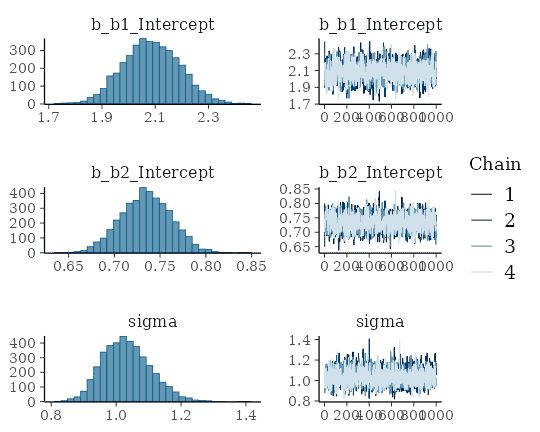
plot(conditional_effects(fit1), points = TRUE)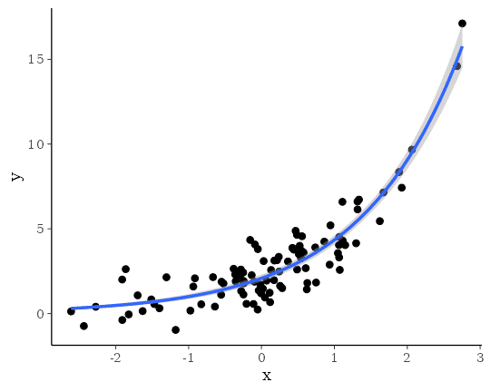
The summary method reveals that we were able to recover
the true parameter values pretty nicely. According to the
plot method, our MCMC chains have converged well and to the
same posterior. The conditional_effects method visualizes
the model-implied (non-linear) regression line.
We might be also interested in comparing our non-linear model to a classical linear model.
fit2 <- brm(y ~ x, data = dat1)
summary(fit2) Family: gaussian
Links: mu = identity
Formula: y ~ x
Data: dat1 (Number of observations: 100)
Draws: 4 chains, each with iter = 2000; warmup = 1000; thin = 1;
total post-warmup draws = 4000
Regression Coefficients:
Estimate Est.Error l-95% CI u-95% CI Rhat Bulk_ESS Tail_ESS
Intercept 2.81 0.17 2.47 3.15 1.00 4447 3120
x 2.01 0.17 1.67 2.35 1.00 3799 3219
Further Distributional Parameters:
Estimate Est.Error l-95% CI u-95% CI Rhat Bulk_ESS Tail_ESS
sigma 1.72 0.13 1.49 1.99 1.00 4413 2915
Draws were sampled using sampling(NUTS). For each parameter, Bulk_ESS
and Tail_ESS are effective sample size measures, and Rhat is the potential
scale reduction factor on split chains (at convergence, Rhat = 1).To investigate and compare model fit, we can apply graphical posterior predictive checks, which make use of the bayesplot package on the backend.
pp_check(fit1)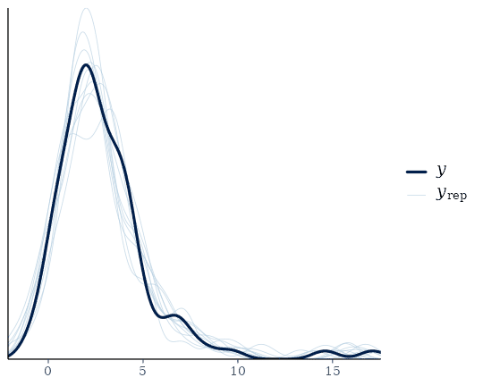
pp_check(fit2)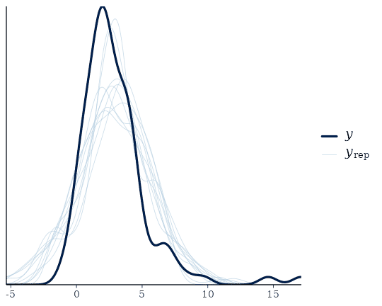
We can also easily compare model fit using leave-one-out cross-validation.
loo(fit1, fit2)Output of model 'fit1':
Computed from 4000 by 100 log-likelihood matrix.
Estimate SE
elpd_loo -146.2 6.1
p_loo 2.9 0.9
looic 292.4 12.1
------
MCSE of elpd_loo is 0.1.
MCSE and ESS estimates assume MCMC draws (r_eff in [0.4, 1.3]).
All Pareto k estimates are good (k < 0.7).
See help('pareto-k-diagnostic') for details.
Output of model 'fit2':
Computed from 4000 by 100 log-likelihood matrix.
Estimate SE
elpd_loo -200.6 17.9
p_loo 8.7 5.2
looic 401.1 35.8
------
MCSE of elpd_loo is NA.
MCSE and ESS estimates assume MCMC draws (r_eff in [0.6, 1.1]).
Pareto k diagnostic values:
Count Pct. Min. ESS
(-Inf, 0.7] (good) 99 99.0% 392
(0.7, 1] (bad) 1 1.0% <NA>
(1, Inf) (very bad) 0 0.0% <NA>
See help('pareto-k-diagnostic') for details.
Model comparisons:
model elpd_diff se_diff p_worse diag_diff diag_elpd
fit1 0.0 0.0 NA
fit2 -54.4 17.3 1.00 1 k_psis > 0.7Since smaller LOOIC values indicate better model fit, it
is immediately evident that the non-linear model fits the data better,
which is of course not too surprising since we simulated the data from
exactly that model.
A Real-World Non-Linear model
On his blog, Markus Gesmann predicts the growth of cumulative insurance loss payments over time, originated from different origin years (see https://www.magesblog.com/post/2015-11-03-loss-developments-via-growth-curves-and/). We will use a slightly simplified version of his model for demonstration purposes here. It looks as follows:
\[cum_{AY, dev} \sim N(\mu_{AY, dev}, \sigma)\] \[\mu_{AY, dev} = ult_{AY} \left(1 - \exp\left(- \left( \frac{dev}{\theta} \right)^\omega \right) \right)\]
The cumulative insurance payments \(cum\) will grow over time, and we model this dependency using the variable \(dev\). Further, \(ult_{AY}\) is the (to be estimated) ultimate loss of accident each year. It constitutes a non-linear parameter in our framework along with the parameters \(\theta\) and \(\omega\), which are responsible for the growth of the cumulative loss and are assumed to be the same across years. The data is already shipped with brms.
AY dev cum premium
1 1991 6 357.848 10000
2 1991 18 1124.788 10000
3 1991 30 1735.330 10000
4 1991 42 2182.708 10000
5 1991 54 2745.596 10000
6 1991 66 3319.994 10000and translate the proposed model into a non-linear brms model.
fit_loss <- brm(
bf(cum ~ ult * (1 - exp(-(dev/theta)^omega)),
ult ~ 1 + (1|AY), omega ~ 1, theta ~ 1,
nl = TRUE),
data = loss, family = gaussian(),
prior = c(
prior(normal(5000, 1000), nlpar = "ult"),
prior(normal(1, 2), nlpar = "omega"),
prior(normal(45, 10), nlpar = "theta")
),
control = list(adapt_delta = 0.9)
)We estimate a group-level effect of accident year (variable
AY) for the ultimate loss ult. This also shows
nicely how a non-linear parameter is actually a placeholder for a linear
predictor, which in case of ult, contains only an varying
intercept over year. Again, priors on population-level effects are
required and, for the present model, are actually mandatory to ensure
identifiability. We summarize the model using well known methods.
summary(fit_loss) Family: gaussian
Links: mu = identity
Formula: cum ~ ult * (1 - exp(-(dev/theta)^omega))
ult ~ 1 + (1 | AY)
omega ~ 1
theta ~ 1
Data: loss (Number of observations: 55)
Draws: 4 chains, each with iter = 2000; warmup = 1000; thin = 1;
total post-warmup draws = 4000
Multilevel Hyperparameters:
~AY (Number of levels: 10)
Estimate Est.Error l-95% CI u-95% CI Rhat Bulk_ESS Tail_ESS
sd(ult_Intercept) 745.18 228.88 425.47 1287.61 1.01 1240 2143
Regression Coefficients:
Estimate Est.Error l-95% CI u-95% CI Rhat Bulk_ESS Tail_ESS
ult_Intercept 5303.32 299.95 4710.18 5908.78 1.00 1054 1717
omega_Intercept 1.34 0.05 1.24 1.44 1.00 2580 2670
theta_Intercept 46.15 2.20 42.29 50.97 1.00 2457 2112
Further Distributional Parameters:
Estimate Est.Error l-95% CI u-95% CI Rhat Bulk_ESS Tail_ESS
sigma 139.75 15.28 114.14 174.74 1.00 2720 2154
Draws were sampled using sampling(NUTS). For each parameter, Bulk_ESS
and Tail_ESS are effective sample size measures, and Rhat is the potential
scale reduction factor on split chains (at convergence, Rhat = 1).
plot(fit_loss, N = 3, ask = FALSE)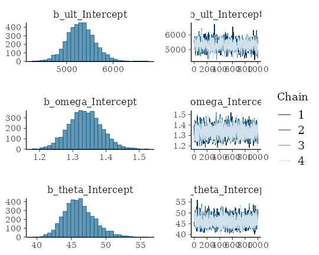
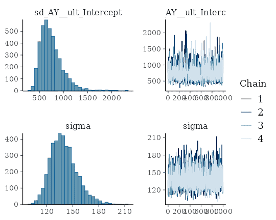
conditional_effects(fit_loss)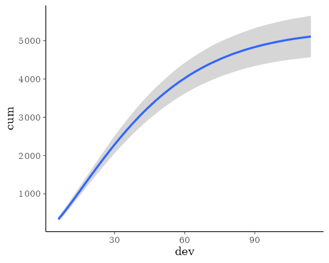
Next, we show conditional effects separately for each year.
conditions <- data.frame(AY = unique(loss$AY))
rownames(conditions) <- unique(loss$AY)
me_loss <- conditional_effects(
fit_loss, conditions = conditions,
re_formula = NULL, method = "predict"
)
plot(me_loss, ncol = 5, points = TRUE)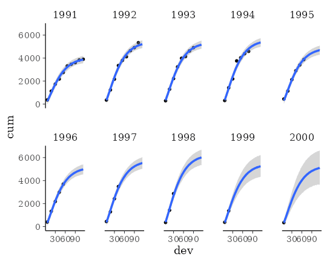
It is evident that there is some variation in cumulative loss across accident years, for instance due to natural disasters happening only in certain years. Further, we see that the uncertainty in the predicted cumulative loss is larger for later years with fewer available data points. For a more detailed discussion of this data set, see Section 4.5 in Gesmann & Morris (2020).
Advanced Item-Response Models
As a third example, we want to show how to model more advanced item-response models using the non-linear model framework of brms. For simplicity, suppose we have a single forced choice item with three alternatives of which only one is correct. Our response variable is whether a person answers the item correctly (1) or not (0). Person are assumed to vary in their ability to answer the item correctly. However, every person has a 33% chance of getting the item right just by guessing. We thus simulate some data to reflect this situation.
inv_logit <- function(x) 1 / (1 + exp(-x))
ability <- rnorm(300)
p <- 0.33 + 0.67 * inv_logit(ability)
answer <- ifelse(runif(300, 0, 1) < p, 1, 0)
dat_ir <- data.frame(ability, answer)The most basic item-response model is equivalent to a simple logistic regression model.
However, this model completely ignores the guessing probability and will thus likely come to biased estimates and predictions.
summary(fit_ir1) Family: bernoulli
Links: mu = logit
Formula: answer ~ ability
Data: dat_ir (Number of observations: 300)
Draws: 4 chains, each with iter = 2000; warmup = 1000; thin = 1;
total post-warmup draws = 4000
Regression Coefficients:
Estimate Est.Error l-95% CI u-95% CI Rhat Bulk_ESS Tail_ESS
Intercept 0.89 0.13 0.64 1.16 1.00 2695 2589
ability 0.51 0.13 0.25 0.78 1.00 3395 3048
Draws were sampled using sampling(NUTS). For each parameter, Bulk_ESS
and Tail_ESS are effective sample size measures, and Rhat is the potential
scale reduction factor on split chains (at convergence, Rhat = 1).
plot(conditional_effects(fit_ir1), points = TRUE)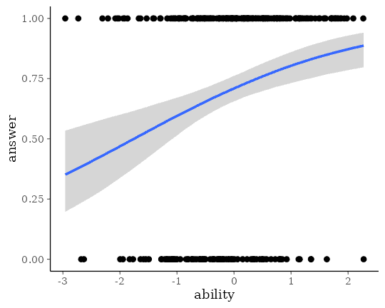
A more sophisticated approach incorporating the guessing probability looks as follows:
fit_ir2 <- brm(
bf(answer ~ 0.33 + 0.67 * inv_logit(eta),
eta ~ ability, nl = TRUE),
data = dat_ir, family = bernoulli("identity"),
prior = prior(normal(0, 5), nlpar = "eta")
)It is very important to set the link function of the
bernoulli family to identity or else we will
apply two link functions. This is because our non-linear predictor term
already contains the desired link function
(0.33 + 0.67 * inv_logit), but the bernoulli
family applies the default logit link on top of it. This
will of course lead to strange and uninterpretable results. Thus, please
make sure that you set the link function to identity,
whenever your non-linear predictor term already contains the desired
link function.
summary(fit_ir2) Family: bernoulli
Links: mu = identity
Formula: answer ~ 0.33 + 0.67 * inv_logit(eta)
eta ~ ability
Data: dat_ir (Number of observations: 300)
Draws: 4 chains, each with iter = 2000; warmup = 1000; thin = 1;
total post-warmup draws = 4000
Regression Coefficients:
Estimate Est.Error l-95% CI u-95% CI Rhat Bulk_ESS Tail_ESS
eta_Intercept 0.21 0.18 -0.14 0.56 1.00 3111 2307
eta_ability 0.79 0.22 0.38 1.25 1.00 3185 2090
Draws were sampled using sampling(NUTS). For each parameter, Bulk_ESS
and Tail_ESS are effective sample size measures, and Rhat is the potential
scale reduction factor on split chains (at convergence, Rhat = 1).
plot(conditional_effects(fit_ir2), points = TRUE)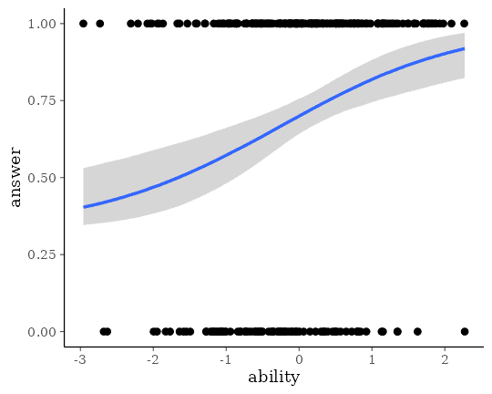
Comparing model fit via leave-one-out cross-validation
loo(fit_ir1, fit_ir2)Output of model 'fit_ir1':
Computed from 4000 by 300 log-likelihood matrix.
Estimate SE
elpd_loo -178.6 7.3
p_loo 2.0 0.2
looic 357.3 14.6
------
MCSE of elpd_loo is 0.0.
MCSE and ESS estimates assume MCMC draws (r_eff in [0.6, 1.1]).
All Pareto k estimates are good (k < 0.7).
See help('pareto-k-diagnostic') for details.
Output of model 'fit_ir2':
Computed from 4000 by 300 log-likelihood matrix.
Estimate SE
elpd_loo -178.2 7.5
p_loo 2.3 0.3
looic 356.5 15.0
------
MCSE of elpd_loo is 0.0.
MCSE and ESS estimates assume MCMC draws (r_eff in [0.6, 1.0]).
All Pareto k estimates are good (k < 0.7).
See help('pareto-k-diagnostic') for details.
Model comparisons:
model elpd_diff se_diff p_worse diag_diff diag_elpd
fit_ir2 0.0 0.0 NA
fit_ir1 -0.4 0.8 0.68 |elpd_diff| < 4 shows that both model fit the data equally well, but remember that predictions of the first model might still be misleading as they may well be below the guessing probability for low ability values. Now, suppose that we don’t know the guessing probability and want to estimate it from the data. This can easily be done changing the previous model just a bit.
fit_ir3 <- brm(
bf(answer ~ guess + (1 - guess) * inv_logit(eta),
eta ~ 0 + ability, guess ~ 1, nl = TRUE),
data = dat_ir, family = bernoulli("identity"),
prior = c(
prior(normal(0, 5), nlpar = "eta"),
prior(beta(1, 1), nlpar = "guess", lb = 0, ub = 1)
)
)Here, we model the guessing probability as a non-linear parameter
making sure that it cannot exceed the interval \([0, 1]\). We did not estimate an intercept
for eta, as this will lead to a bias in the estimated
guessing parameter (try it out; this is an excellent example of how
careful one has to be in non-linear models).
summary(fit_ir3) Family: bernoulli
Links: mu = identity
Formula: answer ~ guess + (1 - guess) * inv_logit(eta)
eta ~ 0 + ability
guess ~ 1
Data: dat_ir (Number of observations: 300)
Draws: 4 chains, each with iter = 2000; warmup = 1000; thin = 1;
total post-warmup draws = 4000
Regression Coefficients:
Estimate Est.Error l-95% CI u-95% CI Rhat Bulk_ESS Tail_ESS
eta_ability 0.87 0.24 0.43 1.37 1.00 2777 2493
guess_Intercept 0.40 0.05 0.30 0.50 1.00 2968 2439
Draws were sampled using sampling(NUTS). For each parameter, Bulk_ESS
and Tail_ESS are effective sample size measures, and Rhat is the potential
scale reduction factor on split chains (at convergence, Rhat = 1).
plot(fit_ir3)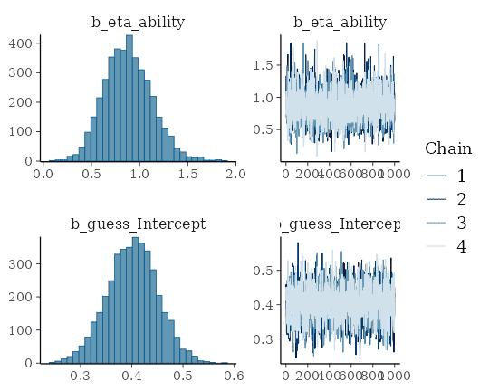
plot(conditional_effects(fit_ir3), points = TRUE)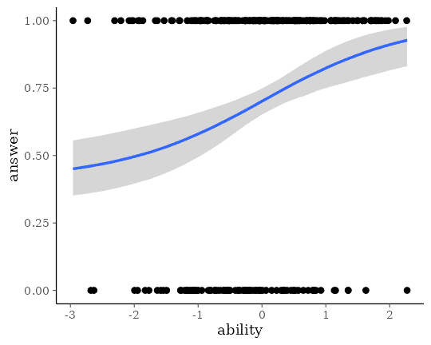
The results show that we are able to recover the simulated model parameters with this non-linear model. Of course, real item-response data have multiple items so that accounting for item and person variability (e.g., using a multilevel model with varying intercepts) becomes necessary as we have multiple observations per item and person. Luckily, this can all be done within the non-linear framework of brms and I hope that this vignette serves as a good starting point.